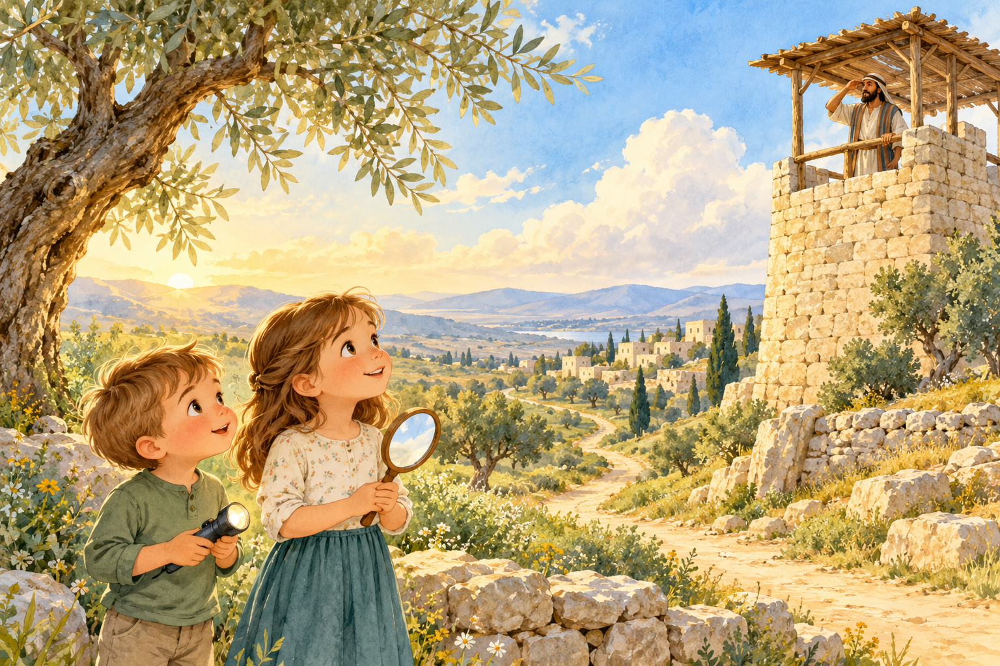

I can help you see
when a room is dark.
I’m not your eyes.
Find something that could do my job.
Need a little hint?
What can send light somewhere? A flashlight, a night-light, or a lamp could work. Pointing is fine.
10 minutes together · a scavenger hunt + an animated story
What if there’s more to see
than you can see right now?
A lesson for today, November 1
Looking ahead to Come, Follow Me · November 2–8, 2026
Ezekiel 1–3; 33–34; 36–37; 47 · Focus: Ezekiel 33:7
Get ready + hunt / 2½ minutes
Say: “You each get a clue. Find one ordinary thing in our house that could fit. Surprising answers count if you can explain them!” Stay on the floor; point to anything that should stay where it is.
I’m not your eyes.
Find something that could do my job.
What can send light somewhere? A flashlight, a night-light, or a lamp could work. Pointing is fine.
You don’t have to turn around.
What ordinary thing could help?
What can show a reflection? A hand mirror, a shiny spoon, or another reflective surface might work. Explain how!
No race. Help each other.
An unexpected object is an invitation to ask “Show me how it works,” not a reason to mark an answer wrong. If a clue is tricky, help the children find one object together.
Bring your discoveries back ↓Make the connection / 1 minute
What did your object help you notice that you might have missed?
Let each child demonstrate or explain. Then say:
“Ezekiel was a prophet. God called him a watchman. A watchman looked out from a high place and warned people about trouble they might not see.”
The Lord told Ezekiel: “I have set thee a watchman.” Ezekiel 33:7 ↗
Jesus gives us prophets to help us recognize spiritual dangers and follow Him. Your flashlight or mirror helps you see; a prophet’s teachings help us understand and choose.
The household objects are comparisons. Prophets receive guidance from the Lord; they do not need a magic object. Focus on loving guidance rather than a promise that following God prevents every hard thing.

Watch + wonder / 4 minutes, including the pauses
Watch this little story together. Before each animation, say what you think will happen. Read the captions, or turn on Read-aloud at the top.
Luke predicts first in part 1; Sally predicts first in part 2. Both get to try a warning in part 3. This is an original imagined story that helps picture the watchman comparison.
Milo is taking bread to a friend. From where he stands, the path looks clear. The watchman is much higher up.
Luke chooses a route; Sally predicts what will happen. Then swap and try the other route.
Say your own warning first. Then try these two.
The words stay on screen, so you can read together.
Bring it home / 2 minutes
You want the toy your brother or sister is using.
Pause before grabbing it. Luke and Sally each get a turn:
“Can I have a turn when you’re finished?” Then listen and make a plan together. A parent can help.
Ask: “Why might someone who loves us tell us to stop or try a different way?” Give time for two answers. If something is confusing, children can ask questions and talk with a trusted grown-up.
Jesus helps us look again,
listen, and choose with love.
Close / 30 seconds
“Heavenly Father, thank Thee for helping us learn. Please help us listen to Thy prophets, notice other people, and follow Jesus. In the name of Jesus Christ, amen.”
Invite Luke or Sally to pray in their own words, or use this short example.